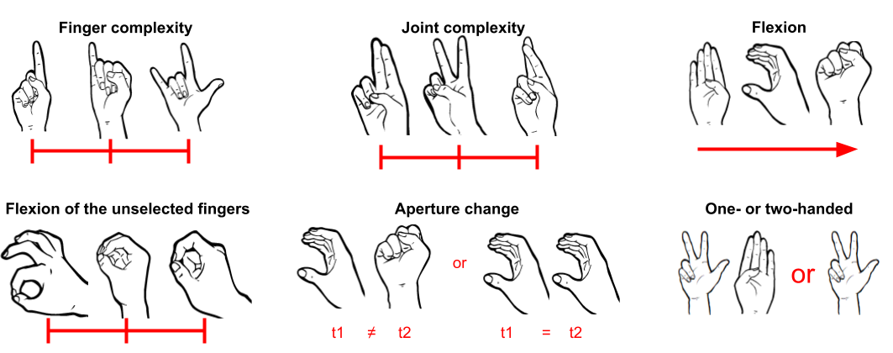
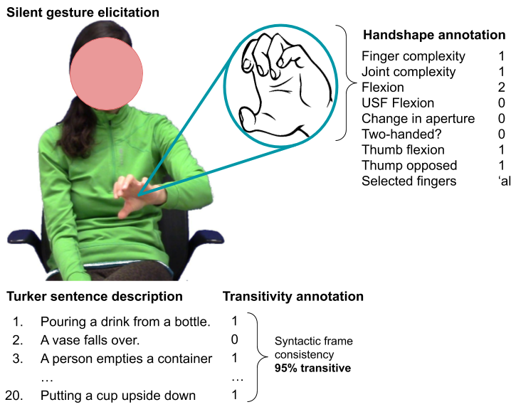

Background: Research on sign language and silent gesture perception has indicated that non-signers consistently identify grammatical and semantic categories expressed in both mediums, like telicity and phi-features (Strickland et al., 2015; Schlenker, 2018), yet struggle with identifying their encyclopedic meaning (van Nispen et al., 2017; Sehyr & Emmorey, 2019). For instance, a non-signer might interpret the verb sign DECIDE as telic, but not know what it means. This has led some to stipulate that non-signers use perceptual cues to resolve meaning in a bottom-up way. However, others have argued that new signals (gestures, unfamiliar signs, artificial languages) are processed top-down, with the identification of subunits of meaning derived from first comprehending the overall meaning of the utterance (McNeill, 2005; Arbib, 2010; Lepic & Padden, 2017). We experimentally weigh these two positions using a silent-gesture perception study and follow up bottom-up (Analysis 1) and top-down (Analysis 2) analyses. We chose transitivity as the grammatical domain of interest given previous work demonstrating that this information is present in gesture production (e.g., Brentari et al., 2017).
Method: We elicited 276 gestures representing 46 unique events (23 transitive) from 6 nonsigning participants, and annotated the gestures for 6 handshape features relevant to transitivity coding in sign languages (e.g., Brentari et al., ibid.; Fig. 1a). We performed a gesture labeling study on Amazon Mechanical Turk, wherein Turkers provided 1-2 sentences describing what they thought each gesture meant (20 sentences per gesture; Fig. 1b). Anlys. 1: To test whether handshape features predict how transitive a gesture was perceived (bottom-up hypothesis), we first coded sentences for transitivity such that each gesture was represented by a transitivity score, or the proportion of transitive sentences it received. We then fit an OLS model to predict Transitivity Score from the 6 handshape features. Anlys. 2: By contrast, participants may use conceptual knowledge about events to decide the transitivity of silent gestures (top-down hypothesis). This predicts that transitivity and semantic similarity covary, such that only semantically similar words are consistently labeled as in/transitive. To assess similarity, we extracted the main verb(s) from each sentence, and measured the Semantic Distance between them, which was computed as the mean pair-wise Euclidean distance of the verbs’ 300-dimensional vector representation (obtained from GLoVe; Pennington et al., 2014). We then calculated Consistency as the normalized absolute distance from a maximally inconsistent baseline of 0.5 (i.e., if half of participants rated the gesture as transitive and the other half as intransitive). We then fit another OLS predicting Consistency from Semantic Distance.
Results: Anlys. 1: The bottom-up model was significantly predictive (F(6,269) = 19.52, p < 0.001) with moderate coverage (R2 = 0.3). Three predictors significantly predicted the perceived transitivity of gestures: Flexion (β = 0.14), Aperture change (β = -0.17), and Two-handed (β = 0.24), all p < 0.01. Anlys. 2: The top-down model was also significantly predictive (F(1,274) = 39.97, p < 0.001), though its coverage was very low (R2 = 0.13). The single predictor, Semantic Distance, was inversely related to consistency (β = -0.04; p < 0.001), indicating that closely related words were more likely to be consistently classed as in/transitive.
Interpretation: Both bottom-up and top-down models were significant, indicating that both information streams may be relevant to transitivity resolution. However, the bottom-up model explains more cases than the top-down model. For example, participants did not converge on a consistent interpretation for gestures depicting the event, Someone crushed a soda can (responses included mold, fight, smoosh, and interlace), but they nearly all perceived the gestures as depicting a transitive event. We ground our interpretation of the bottom-up results in embodied theories of gesture/language comprehension, and suggest the constructs pre-evolved for recognizing manual actions (e.g., grasping; Rumiati et al., 2010) are co-opted for gesture comprehension.
|  |  |
| (a) | (b) |
| Figure 1: (a) Handshape features: ‘Finger complexity’ & ‘Joint complexity’ = measures of ease of articulation w.r.t. fingers and joints (each scored 1 to 3); ‘Flexion’ = degree of curvature of the profiled fingers (1 to 6); ‘Flexion of unselected fingers (USF flexion)’ = degree of curvature of the backgrounded fingers (-1 to 1); ‘Aperture change’ = whether the hand opens/closes (categorical); ‘One- or two-handed’ = whether the production involved one or two hands (categorical). (b) Experimental design, variable definitions: A gesture depicting Someone put a book on its side, with Turker response sentences annotated for transitivity. For each gesture: Transitivity Score was calculated by averaging the number of transitive sentences the gesture received; Consistency was calculated as |0.5 − t|/0.5 where t is the Transitivity Score; Semantic Distance was calculated between each pair of verbs extracted from each sentence. Finally, handshape was annotated for features in (a). Annotation was performed by hand by two trained coders. | |
Arbib, M. (2010). Holophrasis and the protolanguage spectrum. In M. Arbib & D. Bickerton (Eds.), The emergence of protolanguage: Holophrasis vs compositionality (pp. 153–167). John Benjamins Publishing Company.
Brentari, D., Coppola, M., Cho, P. W., & Senghas, A. (2017). Handshape complexity as a precursor to phonology: variation, emergence, and acquisition. Language Acquisition, 24(4), 283–306.
Lepic, R., & Padden, C. (2017). A-morphous iconicity. In C. Bowern, L. Horn, & R. Zanuttini (Eds.), On looking into words (and beyond) (p. 489-515). Berlin: Language Science Press.
McNeill, D. (2005). Gesture and thought. University of Chicago Press.
Pennington, J., Socher, R., & Manning, C. D. (2014). Glove: Global vectors for word representation. In Empirical methods in natural language processing (emnlp) (pp. 1532–1543).
Rumiati, R. I., Papeo, L., & Corradi-Dell’Acqua, C. (2010). Higher-level motor processes. Annals of the New York Academy of Sciences, 1191(1), 219–241.
Schlenker, P. (2018). Iconic pragmatics. NLLT, 36(3), 877–936.
Sehyr, Z. S., & Emmorey, K. (2019). The perceived mapping between form and meaning in ASL depends on linguistic knowledge and task. Language and Cognition, 11(2), 208–234.
Strickland, B., Geraci, C., Chemla, E., Schlenker, P., Kelepir, M., & Pfau, R. (2015). Event representations constrain the structure of language: Sign language as a window into universally accessible linguistic biases. PNAS, 112(19), 5968–5973.
van Nispen, K., van de Sandt-Koenderman, W. M. E., & Krahmer, E. (2017). Production and comprehension of pantomimes used to depict objects. Frontiers in Psychology, 8, 1095.